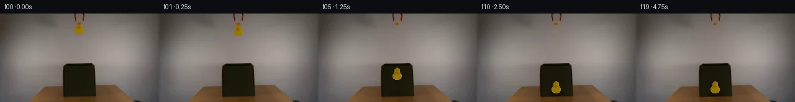

![首帧]()

Round 00
2026-11-06T09:51:42.285800+00:00像素候选变化代码 +197/−0inspection 更新
pixels af009a3d115e6445 · code 8134c7906942426a
查看本轮 generate.py 真实 diff
--- previous/generate.py
+++ current/generate.py
@@ -0,0 +1,197 @@
+"""PixelWorld-Text generator — case_0059_attempt_01.
+
+Scene: an orange-black grabber suspended above an open dark green fabric box
+on a wooden table releases a yellow rubber duck, which falls into the box.
+
+Method (see METHOD.md):
+ * extract the duck sprite and the static orange jaw pixels directly from
+ frame 0 with threshold + connected-component masks;
+ * reconstruct the noisy wall behind the released duck from measured left/
+ right wall strips (per-row linear gradient + grain);
+ * analytic gravity fall, rubber squash/rebound on the fabric floor;
+ * integer-pixel sprite pasting, soft in-box contact shadow;
+ * frame 00 is composited to be byte-identical to first_frame.png.
+"""
+from pathlib import Path
+import numpy as np
+from PIL import Image
+from scipy import ndimage
+import artifact_io
+
+CASE = Path(__file__).parent
+rng = np.random.default_rng(59)
+
+# ---------------------------------------------------------------- load frame 0
+first = np.array(Image.open(CASE / "first_frame.png").convert("RGB"))
+H, W, _ = first.shape
+assert (H, W) == (144, 256)
+
+# ------------------------------------------------------- duck + jaw extraction
+BX0, BX1, BY0, BY1 = 117, 137, 13, 35 # working bbox around the head
+crop = first[BY0:BY1, BX0:BX1].astype(int)
+r, g, b = crop[..., 0], crop[..., 1], crop[..., 2]
+# warm (non-wall) pixels: high red, low blue
+warm = (r > 104) & (b < 86) & ((r - b) > 40)
+lab, n = ndimage.label(warm)
+sizes = ndimage.sum(np.ones_like(lab), lab, range(1, n + 1))
+sil_c = lab == (np.argmax(sizes) + 1) # duck silhouette in crop coords
+
+# fill small interior holes so shaded pixels stay with the body
+sil_c = ndimage.binary_fill_holes(sil_c)
+sil = np.zeros((H, W), bool)
+sil[BY0:BY1, BX0:BX1] = sil_c
+
+ys, xs = np.where(sil)
+SX0, SX1, SY0, SY1 = xs.min(), xs.max() + 1, ys.min(), ys.max() + 1
+print(f"duck silhouette: x {SX0}..{SX1-1}, y {SY0}..{SY1-1}, {sil.sum()} px")
+
+# static orange jaw pixels: deep orange at the top of the head (stay on tool)
+R0, G0, B0 = (first[..., i].astype(int) for i in range(3))
+jaw = sil & (B0 < 48) & (G0 < 98) & (np.indices((H, W))[0] <= 19)
+print(f"static jaw pixels kept on grabber: {jaw.sum()}")
+
+# ------------------------------------------------------------- wall synthesis
+# per-row wall colour from clean strips on either side of the tool/duck
+bg = first.copy()
+wall_rows = np.arange(SY0 - 1, SY1 + 2)
+left_x = np.arange(98, 115)
+right_x = np.arange(138, 156)
+fill_coords = np.argwhere(sil & ~jaw)
+for y in wall_rows:
+ lm = np.median(first[y, left_x], axis=0)
+ rm = np.median(first[y, right_x], axis=0)
+ hit = fill_coords[fill_coords[:, 0] == y]
+ for yy, x in hit:
+ t = (x - left_x.mean()) / (right_x.mean() - left_x.mean())
+ base = lm + (rm - lm) * t
+ noise = rng.normal(0, 3.8, 3)
+ bg[yy, x] = np.clip(base + noise, 0, 255)
+
+# ------------------------------------------------------------------ duck sprite
+sw, sh = SX1 - SX0, SY1 - SY0 # 19 x 20
+sprite = np.zeros((sh, sw, 4), np.uint8)
+sprite[..., 3] = 0
+for y in range(SY0, SY1):
+ for x in range(SX0, SX1):
+ if not sil[y, x]:
+ continue
+ if jaw[y, x]:
+ # colour this head patch like neighbouring (non-jaw) duck pixels
+ col = None
+ for yy in range(19, 24):
+ if sil[yy, x] and not jaw[yy, x]:
+ col = first[yy, x].astype(float)
+ col *= 0.98 + (19 - y) * 0.006 # faint top shading
+ break
+ if col is None:
+ col = np.array([150.0, 117.0, 2.0])
… diff truncated; 110 more lines …